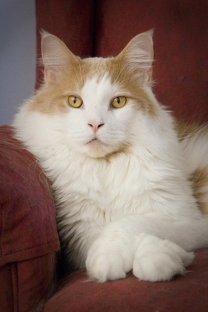
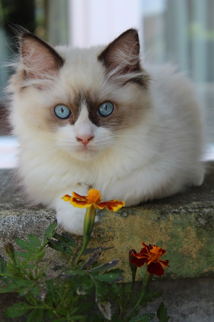

Cat Breeds

The British Shorthair is a sturdy, round-faced cat with a plush, dense coat. Known for its calm, independent nature, it makes a loyal and low-maintenance companion.

Maine Coons are large, friendly cats with tufted ears and a thick, water-resistant coat. They are known for their playful, sociable personality and love for human companionship.

Persians have long, luxurious fur and a calm, gentle demeanor. They are low-energy lap cats that enjoy quiet environments and require regular grooming to maintain their beautiful coat.

Ragdolls are large, affectionate cats with soft, semi-long coats and striking blue eyes. They are known for their relaxed, docile temperament and love being held and cuddled.